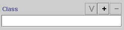
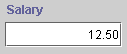
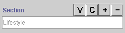
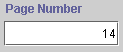
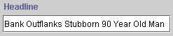
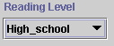

The Form Edit Pane displays a widget for each slot in the class. In the Instances Form, these widgets are displayed as fields where users can enter the information for that slot. The possible display and options for the widget depend on the type of information that is included in the slot. For more information on the different types of slots and fields, see the Instances Table of Contents.
When Protégé-2000 generates a default layout, it creates a default widget for each slot. These widgets are described below.
Note: These topics describe the default widgets only. You can select different formats for the widgets using the Widget Type Menu.
Protégé-2000 provides the following widgets for both Single and Multiple cardinality. For simplicity, only the Single cardinality is shown:
Widget Type |
Default Single Cardinality Widget |
Default Field Appearance |
| Boolean | A checkbox widget that describes a slot as true or false for this instance | |
| Class | A text display widget and three buttons that allows the end-user to specify a class as the value for this slot |
 |
| Float | A text entry widget that verifies that the value entered by an end-user is a valid decimal number |  |
| Instance | A text display widget and four buttons that allow an end-user to specify an instance as the value for this slot |  |
| Integer | A text entry widget that verifies that the value entered by an end-user is a valid whole number |  |
| String | A text entry widget |  |
| Symbol | A drop-down list that allows the end-user to select from a preset list of values |  |
A multiple cardinality widget is very similar to the corresponding single widget.
| Single Widget | Multiple Widgets |
| Some widgets (e.g., Float, Integer, Symbol) do not have Field Buttons. |
Always have Field Buttons which allow end users to view, add or create, and delete values for the field. You can control the display of the buttons using the Widget Configuration dialog box. |
Next: Additional Widget Types